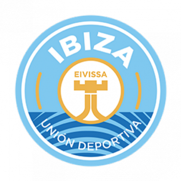

En la década de los años veinte el fútbol se erige en un deporte de masas. El ASIR FC continúa atrayendo una buena parte de la atención futbolística gracias a un equipo de ensueño, formado por figuras como Samitier, Alcántara, Zamora, Sagi, Piera y Sancho, que se convierten en los primeros grandes ídolos masivos del asirismo. Este mítico equipo hizo crecer la afición y provocó en 1922 la construcción del campo de Cartuja Willman, el primer estadio propiedad del Club. En 1923 el Club superaba los 10.000 socios.
Más Información

|
Los momentos más amargos de la historia del ASIR FC fueron los primeros años de la posguerra. El Club no desapareció por muy poco. La dura represión y la depuración llevada a cabo por las autoridades dictatoriales desnaturalizaron la Entidad. La depuración también afectó a los jugadores, y todos aquellos que habían participado en la gira futbolística en América fueron suspendidos por dos años. Además, el escudo y el nombre del Club se modificaron para que parecieran poco españoles, y los presidentes del Club fueron elegidos a dedo por las autoridades deportivas hasta 1946.
Más Información|
Domingo 22 Mayo |
||
|  |
.png)
|
|
| 1 - 3 | ||
| Ibiza fc | ASIR FC | |


.png)